“模态代码” 和 “一般” 代码
“形式代码” 的功能在它被执行后会继续维持，而 “一般代码” 仅仅在收到该命令时起作用。定义移动的代码通常是“模态代码”，像直线、圆弧和循环代码。反之，像原点返回代码就叫“一般代码”。
每一个代码都归属其各自的代码组。在“模态代码”里，当前的代码会被加载的同组代码替换。
|
|||||||||||||||||||||||||||||||||||||||||||||||||||||||||||||||||||||||||||||||||||||||||||||||||||||||||||||||||||||||||||||||||||||||||||||||||||||||||||||||||||
| 注意： 在G之后没有接续数值指令中，在运转时将变成G00的动作。 （注1）印有“*”记号表示初期状态应选择的指令码或被选择的指令码。印有“※”记号表示初期状态依参数所选定指令码或被选择的指令码。 （注2）同一单节指定2个以上的G指令时，最后的G指令有效。 |
| 代码解释 |
| G00 位置定位 (快速进给) |
| 1. 格式 G00 X_ Y_ Z_α＿；（α为附加轴） 依当时的G90或G91的状态而为绝对值或增量值表示。 2. 机能及目的 此一指令伴随坐标语，以现在点做为始点，坐标语指令值为终点，以直线或非直线路径作位置定位。 3. 详细说明 （1）一旦此指令指定时，此G00模式改变其它的G机能，直到G01，G02或G03指令指定为止，G00模式保持有效。G00模式有效时，其后的G00指令只需指定坐标语即可。 （2）在G00模式，刀具总是在单节的始点被加速，终点被减速。当到位状态确定后行一单节，到位与否的宽度由参数设定。 （3）09组的G机能（G72～G89）依G00指令出现而变成取消状态（G80）。 （4）刀具的路径为直线或非直线依参数的选择而定，但是定位时间不改变。 a 直线路径：与直线补间（G01）方式相同，速度受各轴快速进给速度的限制。 b 非直线路径：各轴独立，以最大速度移动定位。  4. 举例 G91 G00 X－270000 Y300000 Z150000； |
| G01 直线补间 |
| 1. 格式 G01 X_ Y_ Z_F_ 按当时的G90或G91的状态，而为绝对值或增量值坐标。F为表示速度资料的数值。 2.机能目的 3.详细说明 4. 举例 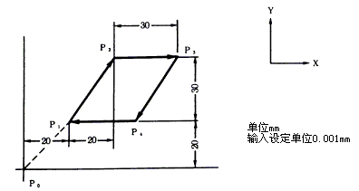 G90 G00 X20000 Y20000；
P0→P1 |
|
G02/G03 G17/G18/G19 螺旋补间 (G02/G03, G17/G18/G19) |
| 1.功能及目的 依据G02/G03之圆弧补间指令以及平面选择G指令（G17，G18，G19），在选择平面内，可以一边做圆弧补间，一边做第3轴的直线补间。一般而言，螺旋补间的速度被指定为包含第3轴补间成分的切线速度F，如图中的上图所示 无论如何，当圆弧平面成分的速度指定时，其被指定在圆弧平面切线速度F，就如图中的上图所示。NC会自动计算螺旋补间的切线速度F，所以在圆弧平面上的切线速度就是F。 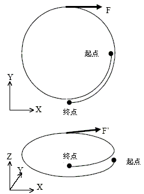
圆弧在 XZ 面上 圆弧在 YZ 面上 圆弧所在的平面用G17, G18
和G19命令来指定。但是，只要已经在先前的程序块里定义了这些命令，也能够省略。圆弧的回转方向像下图表示那样，由
G02/G03来指定。在圆弧回转方向指定后，指派切削终点坐标。 G90 是指定在绝对坐标方式下使用此命令；而 G91
是在指定在增量坐标方式下使用此命令。另外，如果G90/G91已经在先前程序块里给出过，可以省略。圆弧的终点用包含在命令施加的平面里的两个轴的坐标值指定
( 例如，在 XY平面里，G17用 X, Y 坐标值 ) 。 终点坐标能够像 G00 和 G01
命令一样地设置。圆弧中心的位置或者其半径应当在设定圆弧终点之后设置。圆弧中心设置为从圆弧起点的相对距离，并且对应于 X，Y 和Z
轴表示为 I, J 和 K。圆弧起点坐标值减去圆弧中心对应的坐标值得到的结果对应分配给 I、J、K。 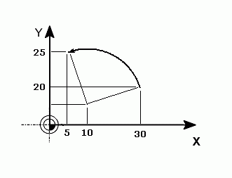 圆弧起点的 X 坐标值 ------------ 30. 圆弧中心的 X 坐标值 ------------ 10. 因此，“I” 就是 20. (10 - 30 = 20) 圆弧起点的 Y 坐标值 ------------ 10. 圆弧中心的 Y 坐标值 ------------ 5. 因此，“J” 就是 5. (10 �C 5 = 5) 结果，这个情况下圆弧命令如下所列： G17 G03 G90 X5. Y25. I-20. J-5.; 或者， G17 G03 G91 X-25. Y15. I-20. J-5.; 因为圆弧半径通常是已给了的，也能够用圆弧半径给命令赋值。 在已给的例子里，圆弧半径是 20.616。因此，该命令能够如下表示： G17 G03 G90 X5. Y25. R20.616.; 或者， G17 G03 G91 X-25. Y15. R20.616; 注意 1) 把圆弧中心设置为 “I”, “J” 和 “K”时，必须设置为圆弧起点到圆弧中心的增量值 (增量命令). 注意 2) 命令里的“I0”, “J0” 和 “K0” 可以省略。偏移值指定要求。
|
| G09 正确停止检查 (G09) |
| 1.机能及目的 刀具的进给速度急促变化时防止机械的振动，以及转角切削时防止圆角的发生，机械减速停止，到位状态确信后，次一单节的指令才开始执行。能达到这些目的机能为正确停止横坐标机能。 2. 格式 G09； 3. 举例 N001 G09 G01 X100.000 F150； 减速停止，到位状态确认后，次单节才开始执行。 N002 Y100.000； 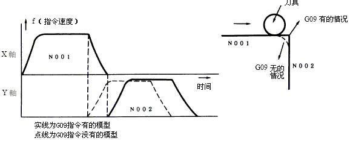
1.机能及目的 2.格式 刀具�a正��入
1.机能及目的 2.格式 3.详细说明 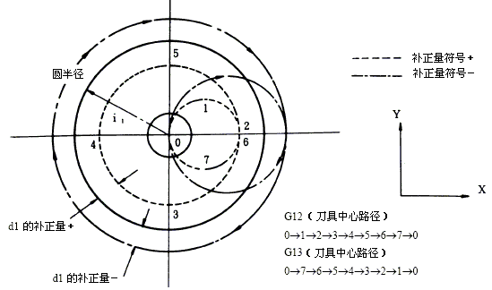 1.机能及目的 2.格式 3.详细说明
1.机能及目的
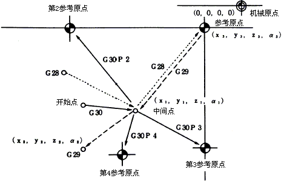 2.格式 1.机能及目的
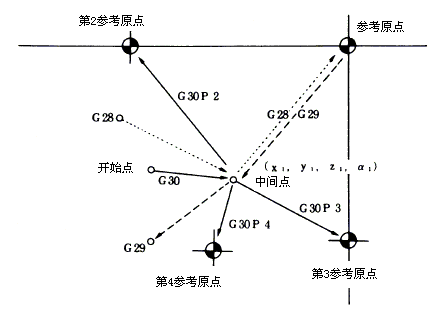 2.格式 3.详细说明 1概要 2.格式 3.详细说明
|
| G40/G41/G42 刀具径补正 (G40/G41/G42) |
1. 格式 G41 X_ Y_; G42 X_ Y_; 当处理工件 (“A”) 时，就像下图所示，刀具路径 (“B”) 是基本路径，与工件
(“A”)的距离至少为该刀具直径的一半。此处，路径 “B” 叫做由 A 经 R
补偿的路径。因此，刀具直径偏置功能自动地由编程给出的路径
A以及由分开设置的刀具偏置值，计算出补偿了的路径B。就是说，用户能够根据工件形状编制加工程序，同时不必考虑刀具直径。
因此，在真正切削之前把刀具直径指派为刀具偏置值；用户能够获得精确的切削结果，就是因为系统本身计算了精确的补偿了的路径。
|

| G43，G44/G49 刀具长补正/取消 (G43，G44/G49) |
1.机能及目的 依据这些指令，各轴移动指令的终点位置，可依设定的补正量做补正。所以，程式作成时假想刀具长的值与实际的值，可以用补正量方式设定，以提高程式的通用性。 2.格式 刀具长补正＋ G43 Z_ H_； 刀具长补正＋起点 G40 Z_； 刀具长补正取消 刀具长补正- G44 Z＿ H＿； 刀具长补正－起点 G49 Z_； 刀具长补正取消 3.详细说明 4. 举例 1.机能及目的 2.格式 3.详细说明 |
| G53 基本机械坐标系 (G53) |
1. 格式 ( G90 ) G53 X_ Y_ Z_; 2. 功能 基本机械坐标系为机械上固定位置（刀具交换位置、行程极限位置等）的坐标系。 G53指令及坐标指令指定时，刀具向基本机械坐标系上的指令位置移动。 3.详细说明 基本机械坐标系在电源投入后，以自动或手动参考原点复归。决定的参考原点为基准，自动地建立起坐标系。 基本机械坐标系不会因G92指定而改变。 G53指令仅在指定的单节有效。 G53指令在增量值指令（G91）时，以选择中的坐标系的增量值移动。 即使G53指令指定时，指令轴的刀具径补正量不取消。 第1参考原点的坐标值是以基本机械坐标系的零点（原点）起到参考原点复归位置的距离。 所有G53命令均以快速进给方式移动。 当G53命令和G28（零点复归）命令被指定在同一单节时，后续的命令有效。
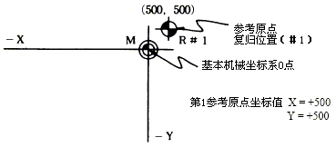 |
| G54-G59 工件坐标系 设定和工件坐标系补正(G54-G59) |
1. 格式 工件坐标系选择 (G54〜G59) (G90) G54 X＿ Y＿ Z＿; 工件坐标系设定 2.机能目的
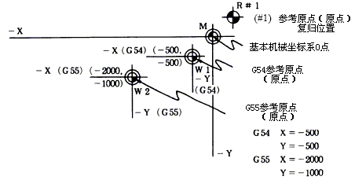 G54（工件坐标系）的模式时，以G92指令可以设定新工件坐标系。同时其它的工件坐标2~6
（G55~G59）也与工件坐标系平行移动，从而设定新的工件坐标系2~6。
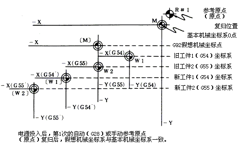 1.机能及目的 2.格式 1.机能及目的 2.格式 标准固定循环；G80~G89, G73, G74, G76 1.机能及目的
2.格式 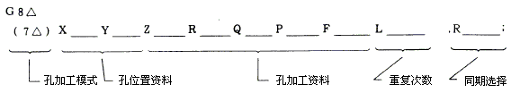 3.详细说明
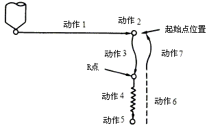 •动作3：到R点的定位，是以快速进给执行。 固定循环的位址及意义：
绝对值指令与增量值指令的不同处：
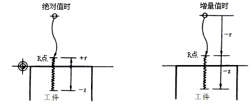 |
|||||||||||||||||||||||||||||||||||||||||||||||||||||||||||||||||||||||||||||||||||||||||||||||||||||||||||||
| G73 步进循环(G73) |
1. 格式 G73 Xx1 Yy1 Zz1 Qq1 Rr1 Ff1 Pp1 ，Ii1，Jj1； P : 暂停指定 2. 功能 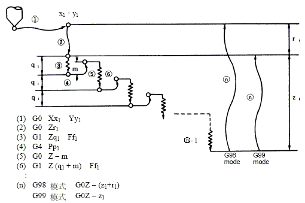 |
| G74 反向攻牙(G74) |
1. 格式 G74 Xx1 Yy1 Zz1 Rr1 Pp1 Rr2(or S1,S2) ,Ii1 ,Jj1; P : 暂停指定 2. 功能 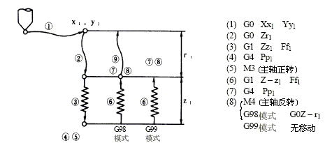 当“r2”为1时，为同期攻牙模式，当“r2”为0时，为非同期攻牙模式。G74执行时，进给百分率调整无效，百分率调整自动地为100%。当暂时停止被按下快速进给时顺序③~⑥将无法立即停止，直到⑥执行完了后才停止，但如在①,
②, ⑨时，则立即暂停。单节停止运转时的停止位置为①, ②,
⑨指令完了时。G74及G84模式时，（攻牙中）的信号从NC输出。G74同步攻牙模式中M3, M4, M5 和S码不输出。
|
| G76 精镗孔循环(G76) |
1. 格式 G76 Xx1 Yy1 Zz1 Rr1 Iq1 Jq2 Ff1； 2. 功能 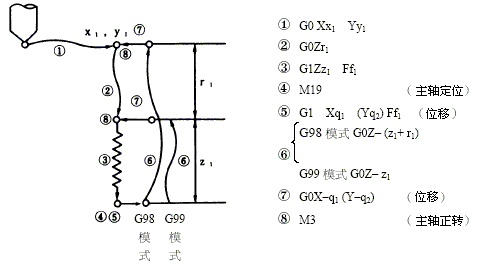 单节停止运转时的停止位置为①, ②,
⑦指令完了时。本指令的使用，在加工面上不会有伤痕，强以作高精度的镗孔加工。（切削后的退回与刀尖相反方向位移动作）
|
| G 80 取消固定循环进程 (G80) |
|
| G 81 钻孔，铅孔(G81) |
1. 格式 G81 Xx1 Yy1 Zz1 Rr1 Ff1，Ii1 ，Jj1； 2. 功能 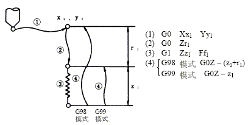 G81 命令可用于一般的孔加工。 |
| G 82 钻孔，计数式镗孔(G82) |
1. 格式 G82 Xx1 Yy1 Zz1 Rf1 Ff1 Pp1，Ii1 ，Jj1； P : 暂停指定 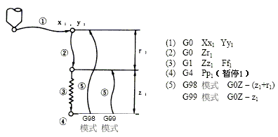 |
| G83 深孔钻循环(G83) |
1. 格式 G83 Xx1 Yy1 Zz1 Rr1 Qq1 Ff1，Ii1，Jj1； Q ： 每次切削量的指定，通常以增量值来指定 2. 功能 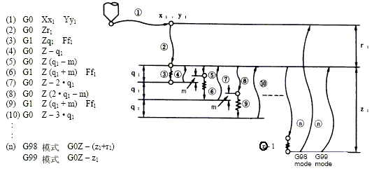 |
| G84 攻牙循环(G84) |
1. 格式 G84 Xx1 Yy1 Zz1 Rr1 Ff1 Pp1 Rr2 (或 S1，S2) ，Ii1，Jj1； P_:暂停指定 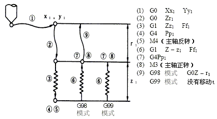 当“r2”为1时，执行同期攻牙模式，当“r2”为0时执行非同期攻牙模式。G84执行时，进给百分率调整无效，百分率调整自动变为100%。空跑也无效。
|
| G85 镗孔循环(G85) |
1. 格式 G85 Xx1 Yy1 Zz1 Rr1 Ff1，Ii1 ，Jj1； 2. 功能 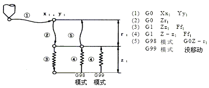 |
| G86 镗孔(G86) |
1. 格式 G86 Xx1 Yy1 Zz1 Rr1 Ff1 Pp1； 2. 功能 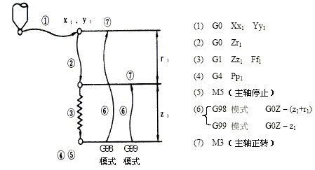 |
| G87 反镗孔循环(G87) |
1. 格式 G86 Xx1 Yy1 Zz1 Rr1 Iq1 Jq2 Ff1； 注： 请注意z1 及r1 的指定。（z1, r1 的符号相反）另外，无R点复归。 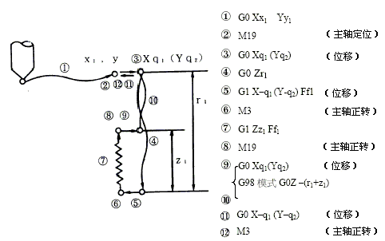 单节停止运转的停止位置为①④⑥
的指令完了时。本指令的使用，在加工面上不会有伤痕，可以作高精度的镗孔。（至孔底为止的位置定位有切削后的退回动作，以刀尖相反方向位移执行）
|
| G88 镗孔(G88) |
1. 格式 G88 Xx1 Yy1 Zz1 Rr1 Ff1 Pp1； 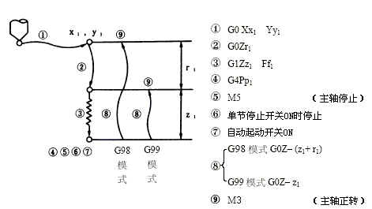 |
| G89 镗孔循环(G89) |
1. 格式 G89 Xx1 Yy1 Zz1 Rr1 Ff1 Pp1； 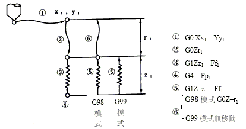 |
| G90/G91 绝对命令/增量命令 (G90/G91) |
1.机能及目的 依据G90，G91指令，可指定坐标指令为绝对值或增量值指令，但是，R指定圆弧半径或I, J, K 指定圆弧中心，通常为增量指定。 2.格式 1.机能及目的 2.格式 1.机能及目的 2.格式 |